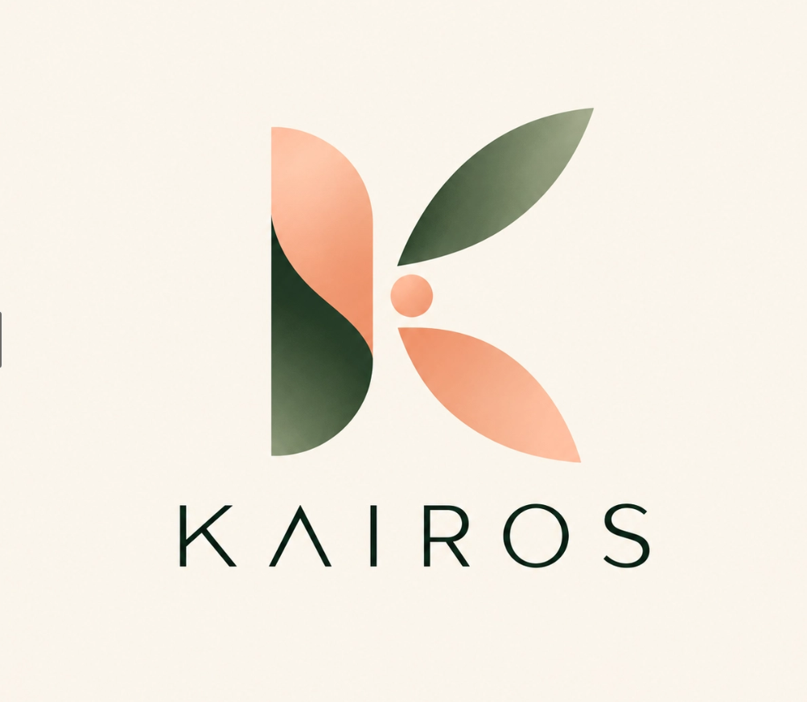

Du sens, pas du hasard
Des profils présentés avec leurs objectifs et leurs attentes.

Manifester mon intérêtKairos est un projet de plateforme pour aider celles et ceux qui veulent entreprendre à trouver leur futur associé. Le service n’est pas encore lancé : nous préparons son lancement et prenons le pouls de la communauté.
Manifester mon intérêtPas encore de compte à créer · Lancement à venir
Trois petites questions pour mieux comprendre vos envies et vos freins. Cela ne prend qu’une minute.
Vos réponses seront envoyées à Kairos par FormSubmit, prestataire de formulaire tiers. Au premier envoi, confirmez le message reçu sur kairos.contact01@gmail.com.Les idées naissent partout. Les bons binômes, beaucoup moins souvent. Entre événements et messages qui s’oublient, il est difficile de savoir qui partage vraiment votre envie, vos valeurs et votre façon de construire.
Kairos vous aide à passer de la rencontre au projet. Un espace pensé pour trouver des personnes compatibles et complémentaires, au bon moment.
Des profils présentés avec leurs objectifs et leurs attentes.
Repérez les compétences et les visions qui se répondent.
Faites connaissance, échangez et imaginez la suite.
Où que vous en soyez, la prochaine étape peut commencer par une rencontre.
Vous cherchez un regard neuf, une compétence clé ou la personne qui aura envie de bâtir avec vous.
Trouver mon complémentVous avez envie d’entreprendre et cherchez une équipe, un projet ou un premier déclic.
Découvrir des projetsLa plateforme est en cours de création. Voici l’expérience que nous imaginons.
Partagez vos compétences, votre expérience, vos ambitions et votre idée de projet.
Découvrez des personnes aux objectifs compatibles et aux compétences complémentaires.
Entrez en contact et voyez si vous avez envie de construire quelque chose ensemble.
Une question qui n’est pas là ? Écrivez-nous
À toute personne qui souhaite entreprendre : que vous ayez une idée, un projet en cours ou simplement l’envie de rejoindre une aventure.
La liste d’attente est gratuite. Les modalités de la plateforme seront communiquées avant son ouverture.
Les profils présentent compétences, ambitions et attentes afin de faciliter des rencontres plus pertinentes et complémentaires.
Kairos est en cours de création et n’est pas encore disponible. Cette page présente le projet et permet aux personnes intéressées de se manifester.
Votre adresse e-mail et vos réponses sont transmises à Kairos via FormSubmit, un prestataire de formulaire tiers. Sa documentation indique conserver les soumissions pendant 30 jours. Évitez de partager des informations sensibles. Pour demander la suppression de vos réponses, écrivez-nous.